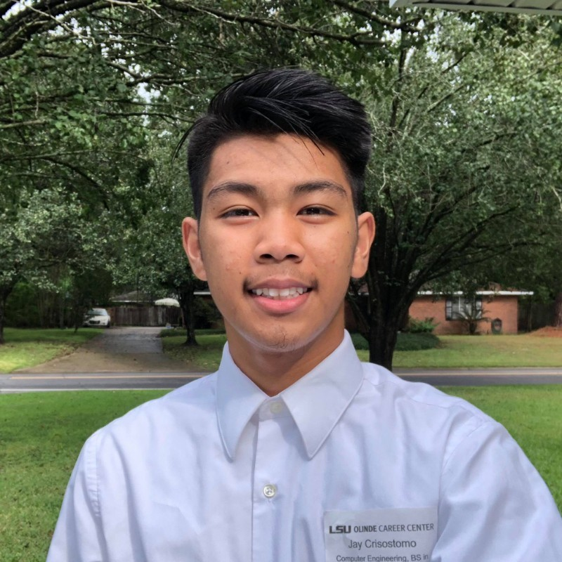

|  | About me Hi, my name is Jay B. Crisostomo and I was born in the Philippines. I am a hard-working college student (Bachelor of Science in Computer Engineering) currently attending Louisiana State University. During the course of my academic career, I also managed to accrue nearly 3 years of work experience. I had the privilege of working for Louisiana State University in a student computer technician role in my free time, where I learned valuable professional skills such as network setup/installation, remote systems access and troubleshooting. In both my academic and professional life. I have been consistently praised as focused by my professors and peers. Whether working on academic, extracurricular, or professional projects, I apply proven problem-solving, teamwork and technical skills, which I hope to leverage into future roles. I spend my free time doing various projects. Please go to the 'Projects' tab to see all my recent finished projects. If you have any questions, please don't hesitate to get in touch. |